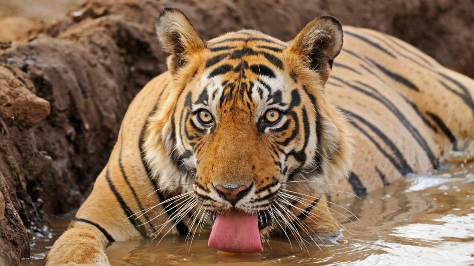
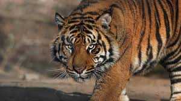
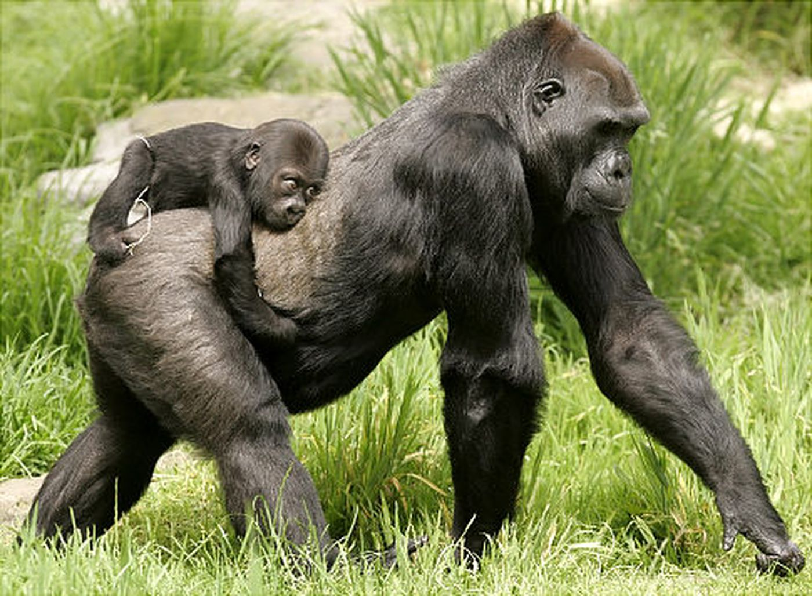
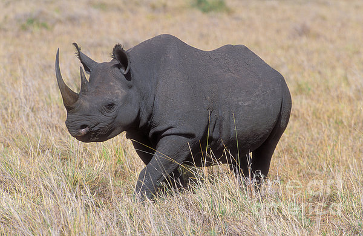
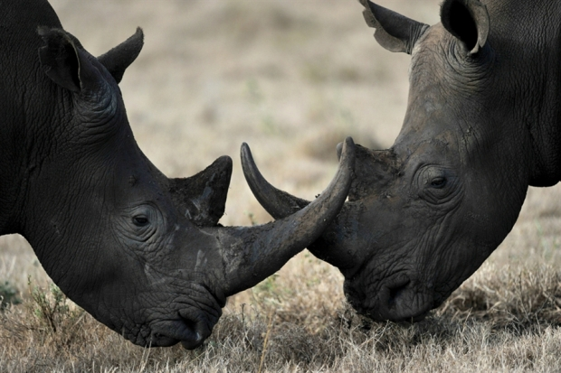
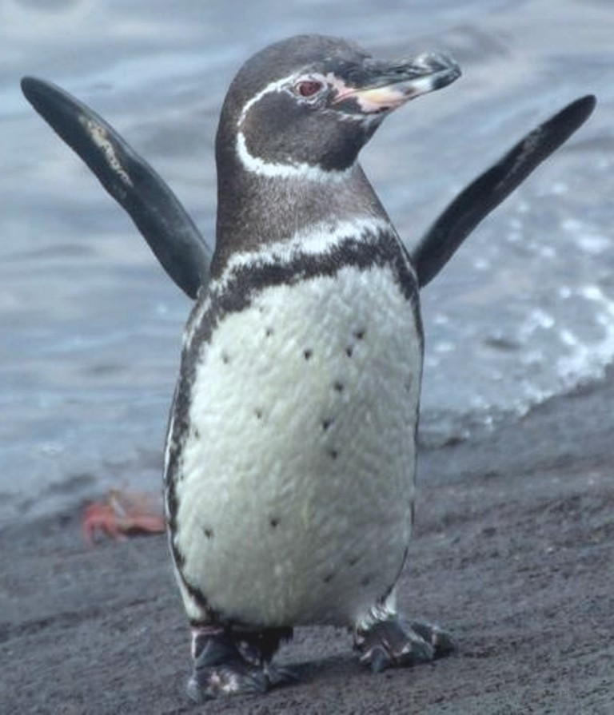
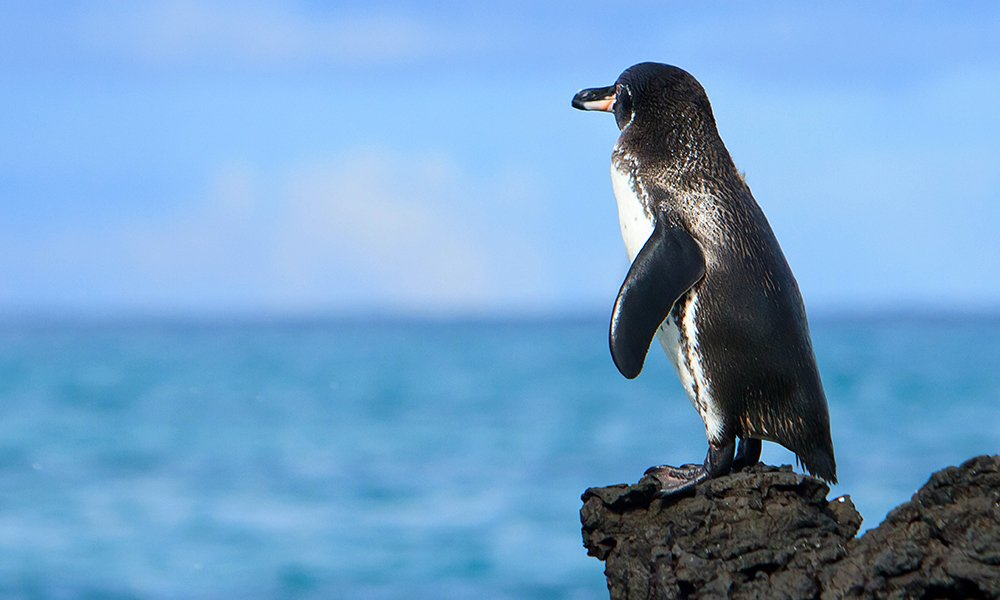

Endangered Species
List of endangered species
What You Can Do
Images
Tiger
There are roughly about 3900 Tigers left in the world according to
travel2next
A large number of them have died due to poaching and deforestation. Intense logging and development around their habitats has had a huge negative impact on them.
93% of historical tiger lands have disappeared primarily because of expanding human activity.
 
Mountain Gorilla
Over the years, the Mountain Gorilla has become critically endangered. Native to Uganda, Africa, their numbers have depleted and could possibly become extinct in the near future.
Some of the reasons of why they are critically endangered is because of poaching and deforestation, just like the tiger. It's crazy how some poachers just kill gorillas just for trophies and respect, accoring to
Panda.org

Black Rhinoceros
The Black Rhinoceros had a huge population in the 1970's. Their numbers started to decrease not too long ago. 90% of the rhino population were killed during the 1970's. Only about 2,500 Black rhinos are left in Africa.
The reason for the mass killings of the black rhinoceros was because of it's valuable horns. Many poachers killed them just for this sole reason at large numbers. Poaching also increased due to poverty.
 
Galapagos Penguins
The Galapagos penguin's population has been dramatically decreasing over time. They are native to the Galapagos Islands and have been decreasing due to human activity.
Humans have caused their numbers to die down. Climate change, pollution and hunting have all contributed to the demise of the penguins. According to
MarineBio.org
, As of now, there are only around 3000-8000 of these penguins left in the world.
 